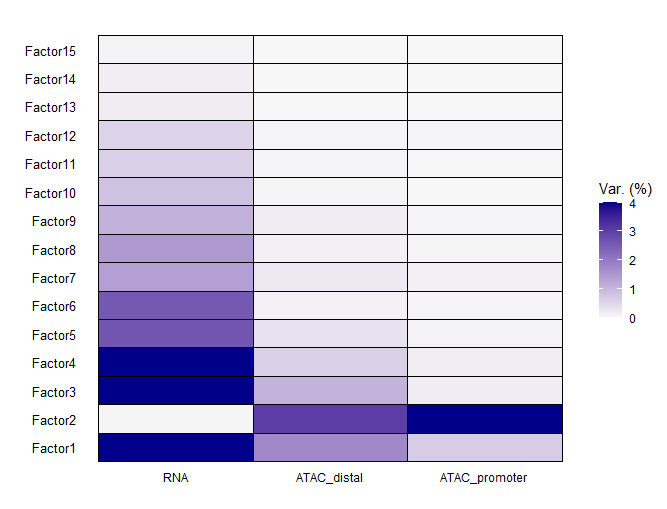

Quality plots and exploring analysis
When working with any sort of dimensionality reduction/ordination technique, there is a lot that can go wrong. Factors can be skewed by bias, or bad normalization, or bad scaling.
This can cause all sorts of problems in the downstream analysis, since it will result in calculating factors that are just plain wrong, and if these problems are not checked or found,
it is possible to make completely wrong inferences. This is why most dimensionality reduction is preceded by some exploratory analysis. Here we showcase some important plots:
Variance by view
One problem that can occur in MOFA specifically is that one of your modalities is actually either not contributing any variance explanation, or way too much, which would lead one
to believe that something we went wrong. That's why we make a simple plot that plots %variance explained by view.
Variance by factor
Another problem could be that in the amount of variance explained by factor. If one of the factors explains almost all of the variance, that doesn't necessarily need to be a problem,
but in an intricate system such as brain cells, this can be concerning, since this could be a sign that your factor 1 is being distracted by some form of bias. If factor 15 is the factor
that explains most variance, something obviously also went wrong. This is why we look at the variance per factor:

CorrelationPlot
A last thing we check if there is any correlation amongst the factors themselves
A good model fit should not show too much variance between the different identified factors.
Too much correlation would indicate the factors being similar to each other, which would mean that the explained variance will not significantly increase with the number of factors.